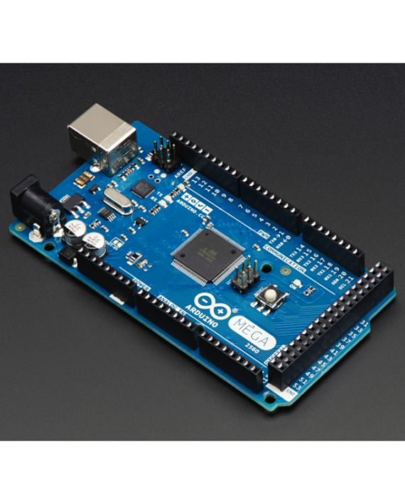

Internship Day 12 Documentation
Day 12 Overview
Day 12 focused on embedded systems, microcontrollers, semiconductor devices, power electronics, and Digital Twin technology. These concepts form the foundation of modern automation, IoT, robotics, and Industry 4.0 applications.
Introduction to Microcontrollers
A microcontroller is a compact integrated circuit designed to perform dedicated tasks in embedded systems.
Commonly Used Microcontrollers
- Arduino Uno
- Arduino Nano
- Arduino Mega
- ESP32
Arduino Family Overview

Arduino Uno
Best For:
- Beginners
- Learning Electronics
- Basic Prototyping

Arduino Mega
Best For:
- Large Robotics Projects
- Multiple Sensor Systems
- Complex Automation Tasks
Arduino Uno Datasheet Study
- Microcontroller: ATmega328P
- Operating Voltage: 5V
- Digital I/O Pins: 14
- Analog Input Pins: 6
- Clock Speed: 16 MHz
- Flash Memory: 32 KB
- SRAM: 2 KB
- EEPROM: 1 KB
ESP32 Overview
ESP32 is a powerful microcontroller with built-in Wi-Fi and Bluetooth connectivity.
Features
- Dual-Core Processor
- Wi-Fi Connectivity
- Bluetooth Support
- Low Power Consumption
- Multiple GPIO Pins
- ADC and PWM Support
Semiconductor Properties
Semiconductors have electrical conductivity between conductors and insulators.
Examples
- Silicon (Si)
- Germanium (Ge)
Key Properties
- Controlled Conductivity
- Temperature Sensitivity
- Doping Capability
- Foundation of Modern Electronics
Transistors
A transistor is a semiconductor device used for switching and amplification.
Types
- NPN Transistor
- PNP Transistor
Applications
- Electronic Switching
- Signal Amplification
- Embedded Systems
MOSFET
MOSFET (Metal Oxide Semiconductor Field Effect Transistor) is a voltage-controlled semiconductor device used for high-speed switching and power control.
Applications
- Motor Drivers
- Power Supplies
- Battery Management Systems
- Robotics
Digital Twin Technology
A Digital Twin is a virtual representation of a physical object, process, or system.
Benefits
- Real-Time Monitoring
- Simulation & Testing
- Predictive Maintenance
- Performance Optimization
Applications
- Smart Manufacturing
- Robotics
- Industrial Automation
- Aerospace Systems
Industry 4.0 Connection
Technologies such as IoT, Digital Twins, Artificial Intelligence, Cloud Computing, and Smart Sensors work together to create intelligent manufacturing systems.
Day 12 Gallery
Learning Outcome
Day 12 enhanced my understanding of embedded systems, Arduino platforms, ESP32, semiconductor devices, MOSFETs, and Digital Twin technology. These concepts are essential for developing advanced IoT systems, robotics platforms, and Industry 4.0 solutions.